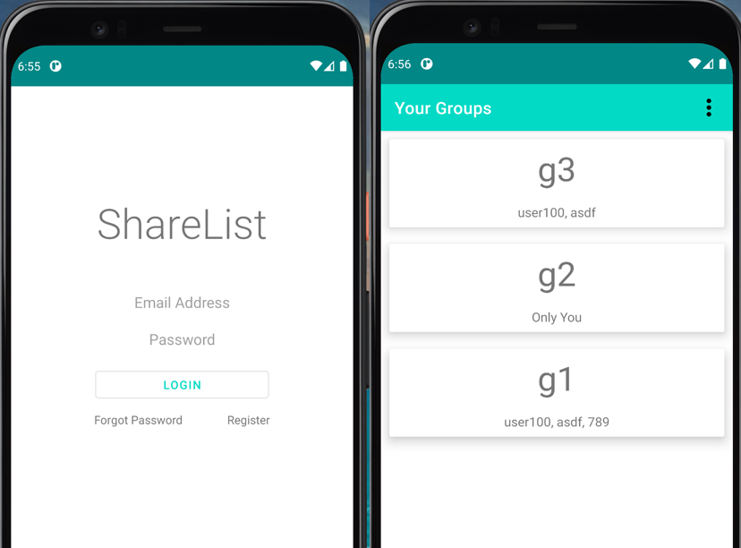
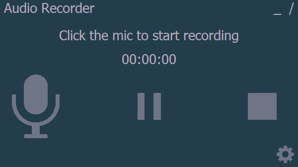
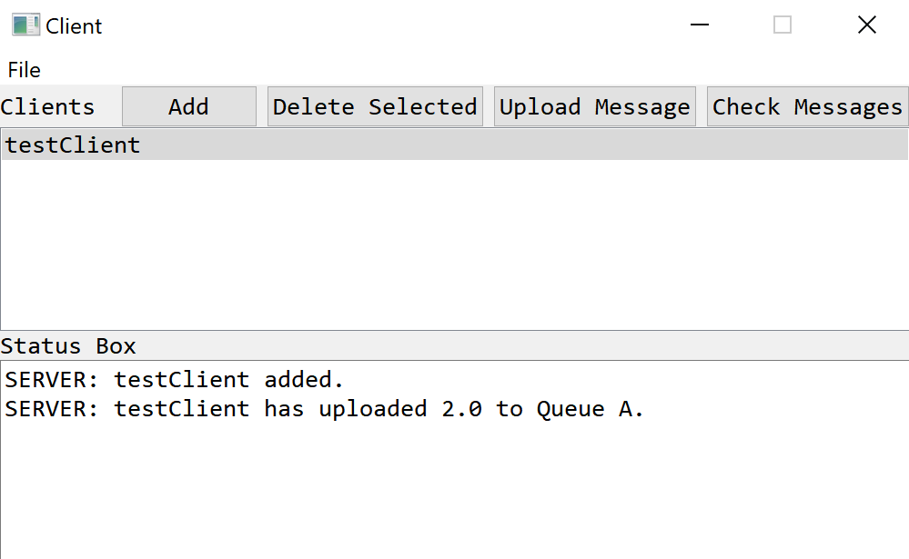
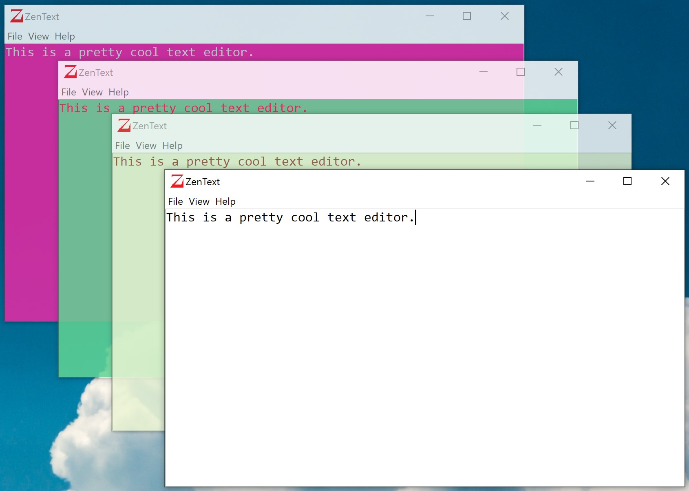

Colorblind AI
Personal Project - A CNN that predicts the number present in a colorblindness test
(Ishihara Plate) image. The model achieved 99% accuracy on the
custom dataset, and is deployed as a WebApp.
Created due to everyone asking me
'You're colorblind?! What color is this?'
Repo
WebApp
Article

Estimation Of Daily Bicycle Traffic Using Machine And Deep Learning Techniques
Research Paper - This project covers various ML/DL methods to predict bicycle counts at intersections in the city of Portland, Oregon.
Repo
Paper

Bike-Share Analysis Case Study
Case Study - Capstone Project for the Google Data Analytics Professional Certificate, in which I analyzed how Citi Bikes are used in New York City.
Repo
View Report

Sinatra Lyrics Generator RNN
Personal Project - Uses a character-level RNN to generate Frank Sinatra Lyrics. Custom lyrics dataset
scraped from Genius. Trained on 80 epochs, achieved loss of only 0.09.
Check out and try the deployed model on the WebApp.
Repo
WebApp
Article
Employee Attrition Using Decision Trees
Personal Project - Iterates through various classification tree methods
on a number of features in order to predict whether an employee will churn.
The XGBoost model achieved 89.8% accuracy.
Model is also deployed as a WebApp.
Repo
WebApp

ShareList - A Shared To-Do List
Group Project - An Android app developed for my software
engineering class group. Written in Java, uses Firebase
for user management. I captained a team of 5 to develop
this app, and all the required documents (UML diagrams,
Use Cases, Increment Matrix, etc.) to go along with it.
Repo

Simple Audio Recorder
Personal Project - A simple Windows audio recorder written
entirely in Python 3, using the libraries PyAudio and wave.
The goal of this application was to implement threading
seamlessly, as well as creating an application with a minimalist aspect.
Can be downloaded from the GitHub Repository.
Repo
Download

Client-Server Projects
Personal Project - Created to learn more about multithreading
and client-server architecture. Written entirely in
Python 3 using PyQt.
Repo

ZenText - Text Editor
Personal Project - A simple Windows text editor
written in Python 3. My first 'real' project. The purpose
of this editor was to learn the fundamentals of Python 3,
along with developing my first application.
Repo
Download